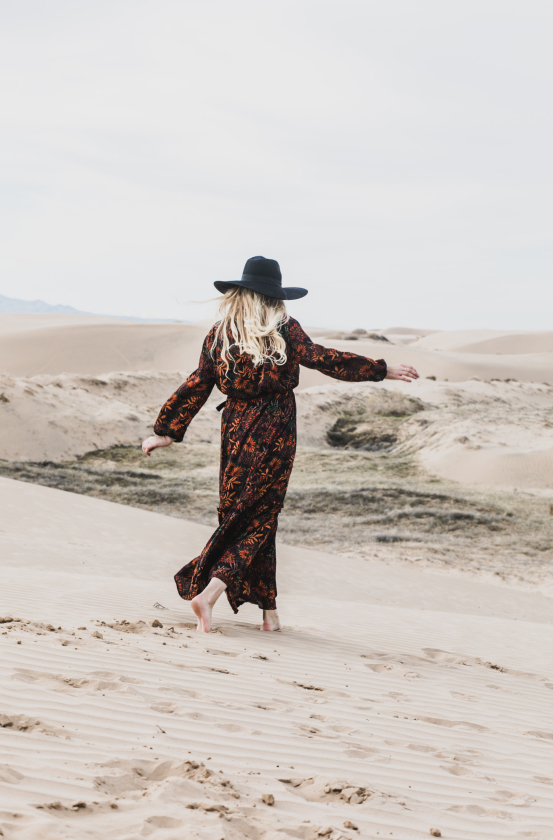
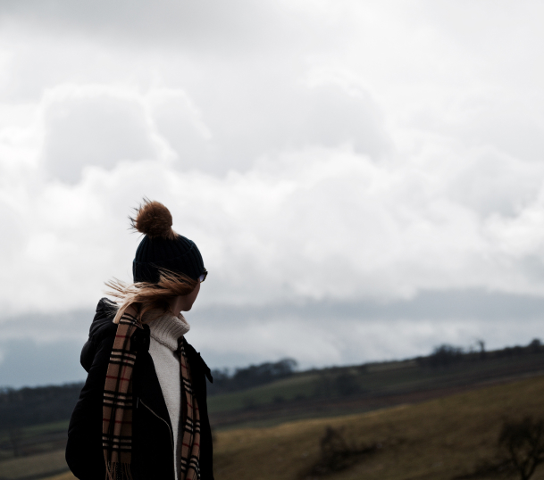
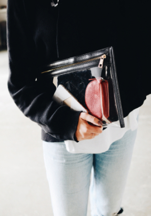
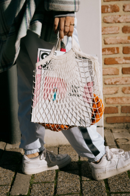
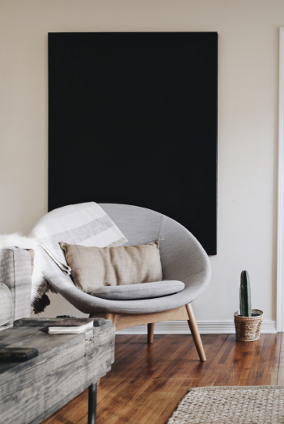

“The more I deal with the work as something that is my own, as something that is personal, the more successful it is.”

Be more flower

Be more flower
Be more flower

"I just really want to do good work and work with some great people, people who challange me."

